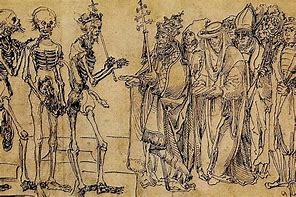
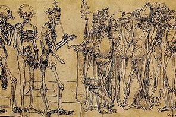
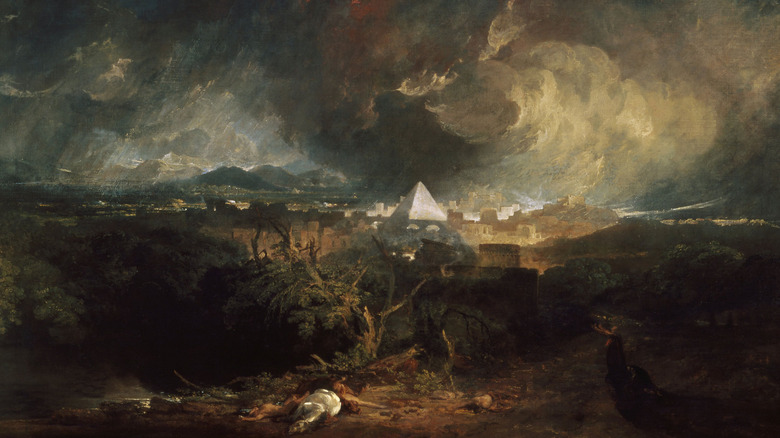
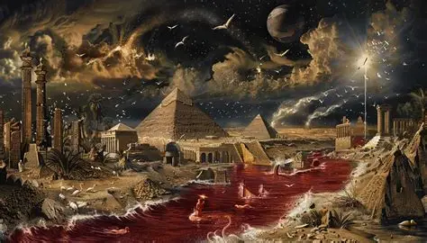

Patients typically developed painful buboes—swollen lymph nodes in the groin or armpits—alongside fever, chills, vomiting, and extreme fatigue. Without antibiotics, bubonic plague was fatal in 30% to 75% of cases within days, while pneumonic and septicemic forms were almost universally lethal
The dramatic population decline upended feudal societies. Labor shortages empowered surviving peasants and artisans to demand higher wages and better conditions, contributing to the decline of serfdom and reshaping Europes agrarian economy
The Black Deaths legacy endures in modern medicine, public health, and social structures. It catalyzed empirical approaches to disease—moving away from miasma and astrological theories—and laid groundwork for the Scientific Revolution. Economically, it ushered in wage-based labor systems, accelerated urbanization, and set Europe on new trajectories of state-building and global exploration

 

The rapid depopulation caused labor shortages, leading to economic shifts, weakened feudalism, and changes in land use. Socially, the plague instilled fear, sometimes resulting in persecution of minorities such as Jewish communities falsely accused of causing the disease. The Black Death also influenced religious thought and art, emphasizing themes of death and mortality.
Symptoms began suddenly with fever, chills, headaches, and nausea, progressing to swollen buboes, armpits, or neck, along with vomiting and fatigue. Untreated plague often led to death within days, with mortality rates estimated between 30% and 60% during the initial outbreaks. The pandemic killed approximately 25 to 50 million people in Europe alone—about one-third to one-half of its population
The Black Death was caused by the bacterium Yersinia pestis, transmitted primarily through flea bites from infected black rats. It spread rapidly through Europe between 1347 and 1351, with origins traced to Central Asia or China, moving westward via trade routes and ships carrying infected rats and fleas. Genomic studies confirm that the strain responsible for the Black Death is ancestral to modern plague bacteria
The Black Death, a devastating pandemic from 1347 to 1352, killed an estimated 25 to 50 million people in Europe and reshaped societies, economies, and medical practices. It is primarily caused by the bacterium Yersinia pestis, spread by fleas on rats, and had profound consequences throughout history.
The Black Death refers to the bubonic plague pandemic that struck Europe from 1347 to 1352. It is regarded as one of the deadliest pandemics in history, resulting in the death of approximately 30% to 60% of Europe's population at the time. This catastrophic event not only decimated populations but also brought significant social, economic, and cultural upheaval.

Plague doctors are best known for their distinctive “bird-like” costume, designed by Charles de Lorme in 1619 and popularized by engravings in the mid-17th century. Key components included:A beaked mask filled with lavender, wormwood, camphor, or vinegar-soaked sponges to “filter” miasma. An ankle-length waxed leather or goat-skin overcoat sealed with oil Gloves, boots, and a wide-brimmed hat indicating medical authority. A wooden cane or bat-winged staff used to examine patients without direct contact
A plague doctor was a physician contracted by a city or town during bubonic plague outbreaks—particularly in 17th-century Europe—to care for infected patients regardless of their ability to pay. These municipal doctors were appointed when general practitioners fled or refused to treat plague victims
The beak wasnt just protection—it was a shroud, sealing the doctors face from the living world and the living dead alike.Every time the doctor looked into a patients eyes, they saw their own reflection, afraid that behind the mask they too would become a statistic.To don the costume was to choose anonymity over identity, safety over connection, life over hope.
Night after night, they tended the dying, performing last rites with gloves caked in filth> In candlelit rooms, the doctor listened to ragged breaths, memorizing each wheeze as a final confession.
Faces turned away in shame or fear, yet some reached out—seeking comfort from the very figure they believed heralded death.The doctor gathered their whispered regrets, their broken promises, and carried them like stones in the leather coat.
Each morning, the plague doctor donned the waxed leather coat and iconic beaked mask as though suiting up for battle. The air inside the visor tasted of rosemary and stale fear, a constant reminder that no herb, no potion, could truly hold back death. Stepping into the silent streets, the doctor became both healer and harbinger, a spectral figure moving through a world emptied of laughter and warm light. In every shuttered window and curbside coffin, they saw the cost of an invisible enemy that struck without mercy or reason.
Behind the masks hollow glass eyes lay a heart heavy with anxiety. While patients saw only the rigid form beneath the coat, the doctor felt every ragged breath as a personal failure. Each diagnosis, each scribbled note of dread in the ledger, etched despair deeper into the soul. Night after night, the doctor cradled bodies swollen with fever, pressing cloths soaked in vinegar to lips that no longer cared to fight for air.Isolation engulfed them most painfully when the city gates closed and families retreated behind bolted doors. Denied the comfort of shared grief, the plague doctor carried the burden of each death alone. In candlelit rooms, the doctor heard whispered confessions—last regrets, unspoken apologies, final words never meant to be shared with anyone but this masked witness. Those intimate exchanges hollowed out the doctors heart, leaving behind a hollow shell that matched the mask itself.As the death toll climbed, the act of recording names became an act of mourning. Each “deceased” marked next to a familiar name was a dagger twisting in the leather-bound book and in the doctors chest. The ledger, once a tool for order, turned into a tombstone registry, and every line crossed through life was a reminder that the healer could not heal themselves of grief. Survival was no victory but a cruel twist of fate: the doctor outlived so many, yet felt increasingly like a ghost among the living.
When finally the epidemic waned and the mask was lifted, the doctors reflection in a cracked mirror revealed sunken eyes and trembling hands. The townsfolk returned to their markets and taverns, blissfully ignorant of the silent sacrifices made in darkened hallways. The plague doctor walked on, forever marked by the weight of those last breaths and the unspoken promise to remember each lost soul. In every rustle of a passing cloak and every distant church bell, the doctor still hears the echo of despair—and carries it forward as a testament to lives they could not save.
The story of the plagues unfolds as a dramatic confrontation between divine will and human authority, weaving together moments of cosmic upheaval and intimate suffering. It begins with the transformation of the life-giving Nile into blood, an image both grotesque and poignant: fish floated belly-up, fishermen despaired, and a river revered as a deity became a vessel of death. Out of those crimson waters emerged an army of frogs that overflowed into homes and courts, their ceaseless croaking a mockery of the order Pharaoh sought to maintain. 
As the frogs receded, the very dust of Egypt rose again against its people, turning into swarms of biting lice that spared neither man nor beast. Every inch of skin itched with the reminder that no corner of the land was safe from this invisible foe. Soon after, the air itself betrayed the Egyptians as dense clouds of flies darkened the skies and tormented the living, driving them indoors in a vain attempt to reclaim a moments peace.The plagues deepened in their cruelty when disease struck the livestock—horses, cattle, sheep, and goats perished overnight, leaving fields fallow and granaries vulnerable. In the wake of that loss came a personal affliction: painful boils erupted on every Egyptian, a physical testament to the power of the unseen hand shaping these events. Physicians stood helpless as their remedies proved impotent against this scourge.Then the heavens unleashed a tempest of hail and fire, smashing crops and uprooting trees, the sound of thunder mingling with the crackle of lightning as if the sky itself had taken up arms. Where hail had failed to annihilate every green shoot, a vast cloud of locusts completed the devastation—fields stripped bare within hours, hope for a harvest reduced to dust beneath countless tiny wings.Daylight itself was stolen next, and an impenetrable darkness cloaked the land for days on end. Egyptians groped through streets they once knew, feeling their way past silent idols and shuttered homes, while the Israelites remained safely illuminated in their dwellings. That stark contrast between light and shadow encapsulated the chasm widening between two peoples bound by geography but divided by fate.At the height of this ordeal came the final, most grievous blow: the death of every firstborn in Egypt. In a single night, precious heirs and livestock perished in their sleep, plunging households into inconsolable grief and shattering the last vestiges of Pharaoh’s resistance. It was this ultimate sacrifice that broke the chains, compelling the Israelites to depart—and with them, a nation reborn.Though rooted in ancient scripture, the narrative of these plagues resonates across millennia as a meditation on power, vulnerability, and justice. Each calamity—water turned to blood, the legions of frogs and locusts, the darkened sky, and the toll on the firstborn—becomes a brushstroke in a larger portrait of divine intervention. As much as it is a story of judgment, it is also one of liberation, teaching that even the mightiest empire can be humbled and that freedom often emerges from the darkest trials.
